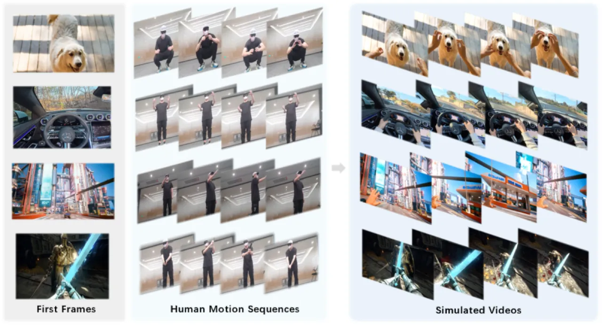
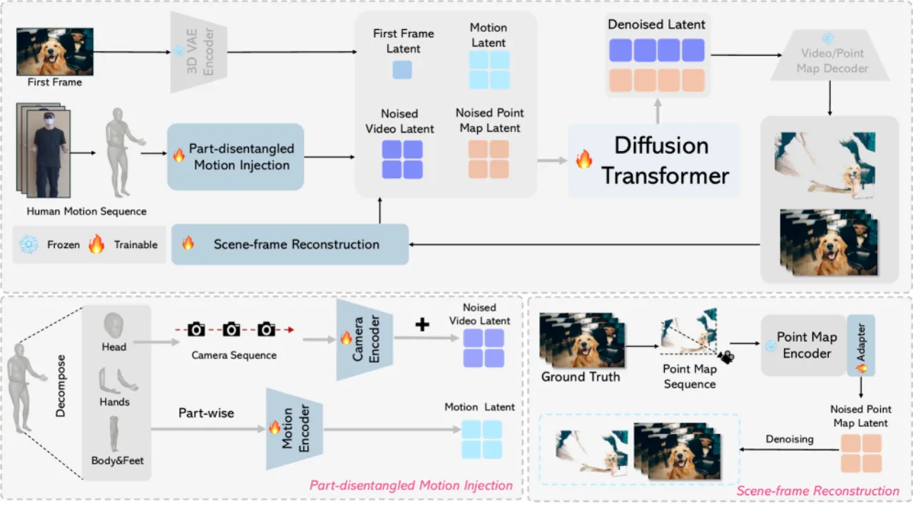
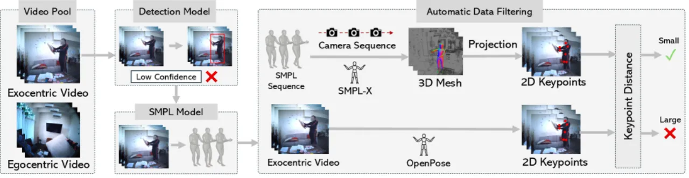
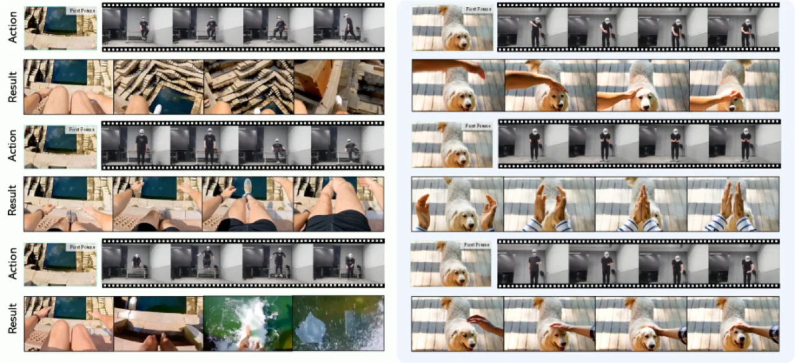
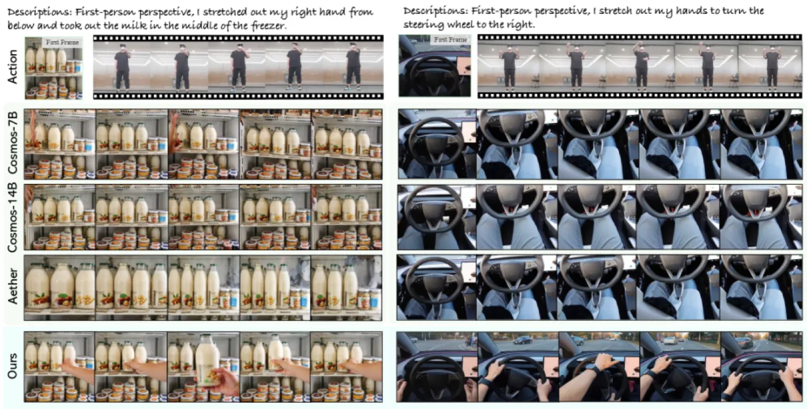

PlayerOne 以单张第一人称（egocentric）图像和同步外部视角的人体运动序列为输入，生成与人体动作精确对齐的沉浸式视频。 核心创新在于 Part-Disentangled Motion Injection (PMI) 机制和 Scene-Frame Reconstruction (SR) 框架， 在 Diffusion Transformer 基座上实现粗到精（coarse-to-fine）的训练策略，显著优于 Cosmos、Aether 等现有方法。
现有世界模拟器要么局限于游戏环境（运动方式受限），要么缺乏精细的人体运动控制——玩家只能是"被动旁观者"而非"主动参与者"。 真实、沉浸、无限制的第一人称世界模拟尚未得到充分探索。
"We introduce PlayerOne, the first egocentric realistic world simulator, facilitating immersive and unrestricted exploration within vividly dynamic environments."

PlayerOne 以 Wanx2.1（1.3B Diffusion Transformer）为基座，引入两个核心模块： Part-Disentangled Motion Injection (PMI) 用于精确的分部位运动控制， Scene-Frame Reconstruction (SR) 用于保持长视频中的场景一致性。 训练采用粗到精的两阶段策略，先在大规模 egocentric 文本-视频对上做 LoRA 预训练，再冻结 LoRA 仅微调最后六个 block。

传统方案将全身运动拼接为单一向量（"entangled"）送入 ControlNet，导致不同部位（尤其是头部视角与手部动作）互相干扰。 PMI 将运动分为三组：
消融实验表明，PMI 相比 ControlNet 基线将 MPJPE 从 241.73 降至 156.76，FVD 从 287.52 降至 245.72。
为避免长视频中场景漂移，SR 在训练时用 CUT3R 从真值视频渲染 point map 序列， 通过带 5层 3D 卷积 adapter 的专用编码器与视频 latent 联合去噪， 迫使模型在时序上维持三维场景一致性。推理阶段不需要 point map 输入。

阶段一（粗粒度）：在 Egovid-5M 等大规模 egocentric 文本-视频对上做 LoRA（rank 128，weight 4）预训练，
使模型具备第一人称视觉先验。
阶段二（细粒度）：冻结 LoRA，仅对最后六个 Transformer block 在精标的运动-视频配对数据上微调，
建立精确的运动-视觉对应关系。
此外，采用 Asymmetric Distillation（因果学生由双向教师监督）将推理步数压缩至 50 步，输出帧率保持 8 FPS。
评估在自建 egocentric-exocentric 配对测试集上进行，基线包括 Aether、Cosmos（Diff-7B / Diff-14B）。 指标：DINO-Score（视觉一致性）、CLIP-Score（语义匹配）、MPJPE / MRRPE（运动对齐，单位 mm）、FVD（视频质量）、LPIPS（感知质量）。 用户研究由 20 名标注员对 25 组视频进行 1–4 分盲评（Quality / Fidelity / Smoothness / Alignment）。
| 方法 | DINO-Score ↑ | CLIP-Score ↑ | MPJPE ↓ | MRRPE ↓ | FVD ↓ | LPIPS ↓ |
|---|---|---|---|---|---|---|
| Aether | 38.0 | 64.2 | 415.70 | 431.05 | 397.40 | 0.1856 |
| Cosmos (Diff-7B) | 45.3 | 70.3 | 301.92 | 324.12 | 346.09 | 0.1630 |
| Cosmos (Diff-14B) | 51.6 | 79.7 | 256.73 | 253.06 | 302.17 | 0.1351 |
| PlayerOne（本文） | 67.8 | 88.2 | 127.16 | 151.62 | 226.12 | 0.0663 |
| 方法 | Quality ↑ | Fidelity ↑ | Smoothness ↑ | Alignment ↑ |
|---|---|---|---|---|
| Aether | 1.32 | 1.30 | 1.31 | 1.34 |
| Cosmos (7B) | 2.07 | 2.13 | 2.05 | 2.09 |
| Cosmos (14B) | 3.02 | 2.94 | 2.98 | 2.71 |
| PlayerOne | 3.59 | 3.63 | 3.65 | 3.86 |


逐步累加各模块，DINO-Score 从基线 51.3 提升至 67.8，MPJPE 从 376.14 降至 127.16：
| 配置 | DINO ↑ | CLIP ↑ | MPJPE ↓ | FVD ↓ | LPIPS ↓ |
|---|---|---|---|---|---|
| Baseline | 51.3 | 65.6 | 376.14 | 394.16 | 0.1421 |
| + Pretrain | 56.6 | 74.4 | 258.05 | 301.32 | 0.1146 |
| + ControlNet | 57.1 | 75.2 | 241.73 | 287.52 | 0.1103 |
| + PMI (No Camera) | 60.7 | 79.8 | 183.25 | 257.04 | 0.0902 |
| + PMI（含相机编码） | 62.5 | 81.3 | 156.76 | 245.72 | 0.0839 |
| + Filtering | 64.2 | 83.8 | 141.56 | 230.50 | 0.0782 |
| + Recon (DUSt3R) | 67.5 | 87.7 | 129.08 | 228.20 | 0.0685 |
| PlayerOne Full (CUT3R) | 67.8 | 88.2 | 127.16 | 226.12 | 0.0663 |
关键发现：PMI 中相机编码器对视角控制不可或缺（去掉后 MPJPE 从 156.76 上升至 183.25）； CUT3R 的 point map 质量优于 DUSt3R，FVD 从 228.20 进一步降至 226.12； 数据过滤（排除重投影误差最高 10%）对运动对齐有显著正效果。
模型在游戏风格场景下的生成质量明显弱于真实场景，作者归因于 "imbalanced distribution between realistic and game training data"。 解决方向是扩大游戏场景训练数据的比例。
精调阶段需要 egocentric-exocentric 同步配对视频（内外视角同时录制）， 采集成本较高，限制了训练数据规模；自动化流水线虽已过滤质量较低样本，但仍依赖 SMPLest-X 和 CUT3R 的估计精度。
SR 模块在训练时利用真值 point map 进行场景对齐，但推理时无法获得真值 point map， 模型依赖训练时建立的隐式一致性。在极端视角变化或大范围场景中，一致性保障有限。
训练固定为 480×480、49帧（约6秒），推理输出同样受此约束。 对于更长时序的探索或高分辨率需求，需要额外的工程扩展（如滑动窗口续帧策略）。